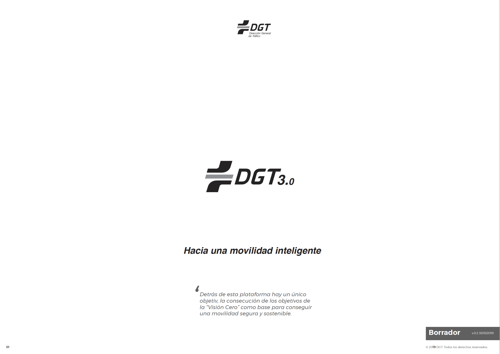

Realización de pruebas de integración asistidas por el equipo de desarrollo de la Plataforma DGT 3.0.
| Empresa | Fecha | Versión | Contacto |
|---|---|---|---|
|
01/02/2018 | 1.0 | negocio@inspide.com |
| Imagen | Nombre | Empresa | Cargo | ||
|---|---|---|---|---|---|
 |
José Gómez Castaño | |
CTO | jgcasta@inspide.com | linkedin.com/in/josegomezcastano |
Ronda inicial de presentaciones entre todos los asistentes al workshop "Pruebas de conexión real a DGT 3.0".
 Requerimientos previos
Requerimientos previos
 Documentación del API Bandeja de Salida
Documentación del API Bandeja de Salida
La información del API de la Bandeja de Salida se encuentra en las siguientes urls: Apiary y Swagger.
 Herramientas
Herramientas
Para la ejecución de las pruebas es necesario el uso de un Cliente REST. Se propone la descarga de Postman como cliente para el seguimiento del workshop.
Realizar pruebas de integración detalladas controladas por el equipo de desarrollo de la plataforma DGT 3.0.
| Definición | Presentación |
|---|---|
| La Plataforma de Vehículo Conectado DGT 3.0 es una plataforma que ofrece servicios de seguridad vial y movilidad inteligente bajo el concepto SaaS basados en el procesamiento de información espacial. |  |
Nota
Los servicios expuestos en DGT 3.0 abarcan todas las fases del ciclo de vida de un dato espacial:
- Procesamiento en tiempo real de grandes volúmenes de datos de carácter espacial y alfanumérico para su consumo.
- Análisis espacial y aplicación de diferentes tipos de lógicas de seguridad vial sobre el Big data disponible para la obtención de KPIs.
- Envío de información de seguridad vial cuando el nivel de riesgo supera un umbral prestablecido.
| Definición | Video de referencia |
|---|---|
| Es un nuevo concepto que consiste en virtualizar los Paneles de Mensaje Variable tradicionales (físicos) para permite a la Dirección General de Tráfico regular la circulación adaptándola a las circunstancias cambiantes del tráfico. Se utilizan para dar información a los conductores, advertirles de posibles peligros y dar recomendaciones en cualquier punto, tramo o área de la red viaria. |  |
| Bandeja de Salida | Bandeja de Difusión |
|---|---|
| Interfaz utilizada por la Plataforma del Cliente para la recepción bajo demanda de cualquier evento georreferenciado disponible en la Plataforma DGT 3.0 en el momento de realizar la consulta | Interfaz utilizada por la Plataforma del Cliente para el envío en tiempo real de eventos puntuales y/o posicionamiento dinámico de sus dispositivos conectados; y/o recepción en tiempo real de cualquier evento georreferenciado disponible en la Plataforma DGT 3.0 durante la aproximación del dispositivo a la ubicación del evento que incide en su movilidad |
| En preproducción actualmente | En preproducción en febrero 2019 |
| En producción en marzo 2019 | En producción en marzo 2019 |
| Documentación aquí | Documentación próximamente |
| Caso | Motivo |
|---|---|
| 1 | La Compañía no desea enviar información de sus dispositivos conectados (App, IoT, vehículos conectados, etc) a la Plataforma DGT 3.0. |
| 2 | La Compañía desea enviar información de tráfico (incidencias, estado carretera, etc.) a la Plataforma DGT 3.0 por lo que debe implementar los mecanismos necesarios en su Plataforma de movilidad inteligente. |
| 3 | La Compañía desea recibir información de la Plataforma DGT 3.0 por lo que debe implementar la lógica necesaria en su Plataforma de movilidad inteligente que permita explotar la información disponible y enviarla al Cliente en el formato y con la periodicidad acordada. |
| 4 | La Compañía desea recibir información de la Plataforma DGT 3.0 en sus dispositivos conectados (App, IoT, vehículos coenctados, etc) por lo que debe implementar la lógica necesaria en su Plataforma de movilidad inteligente para notificar a los usuarios en tiempo real. |
Link de acceso a ejercicios prácticos aquí. Se abrirá una nueva ventana.
Se cumplimetará durante el taller por los ponentes.
Resumen de las ideas principales por parte de los ponentes resumiendo las lecciones aprendidas incidiendo en aquellos aspectos más descatados detectados durante la sesión.
Realización de pruebas autónomas de conexión por parte del fabricante con la asistencia en remoto por parte del equipo de desarrollo de DGT 3.0. Esta consistirá en:
Sesión abierta entre asistentes y ponentes. El objetivo principal es obtener feedback de los asistentes en relación a mejoras sobre el workshop, interfaces, etc.
© 2018-2019 DGT. Todos los derechos reservados.